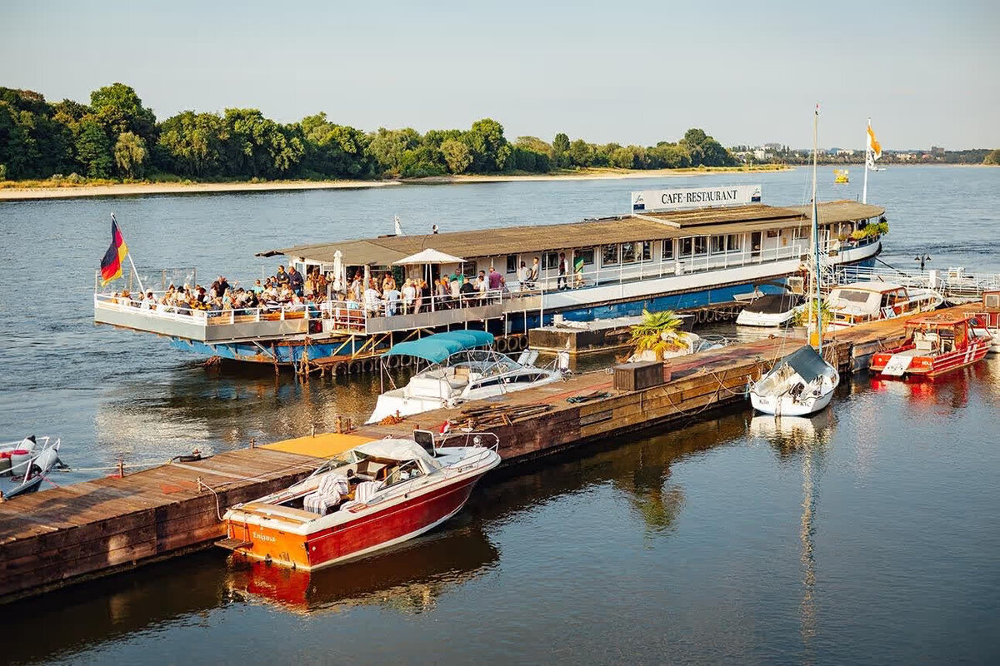
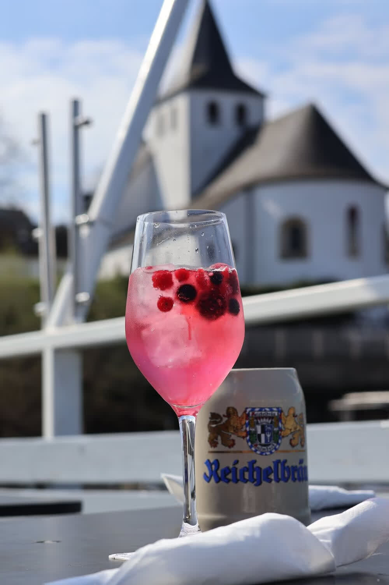
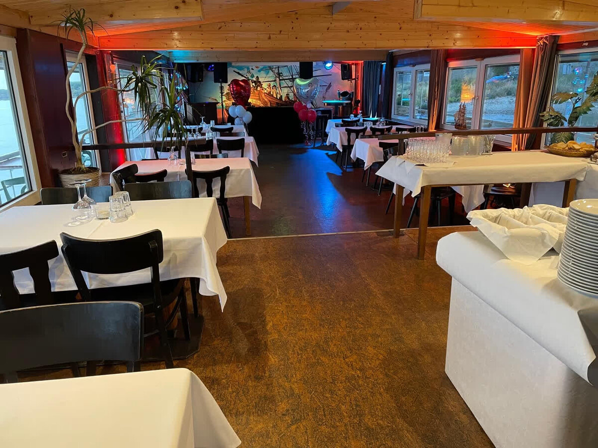
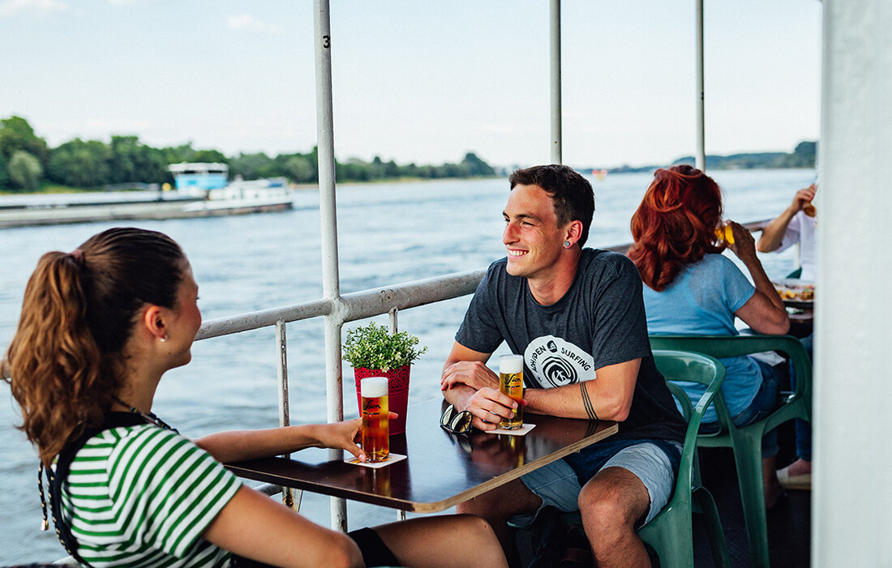
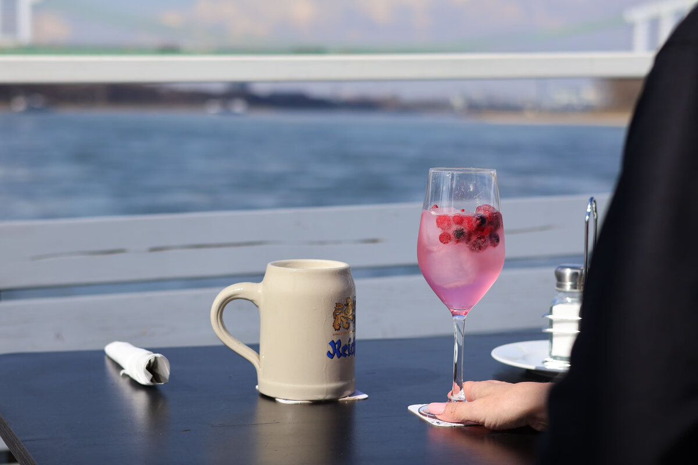
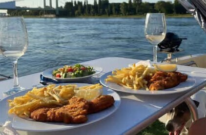
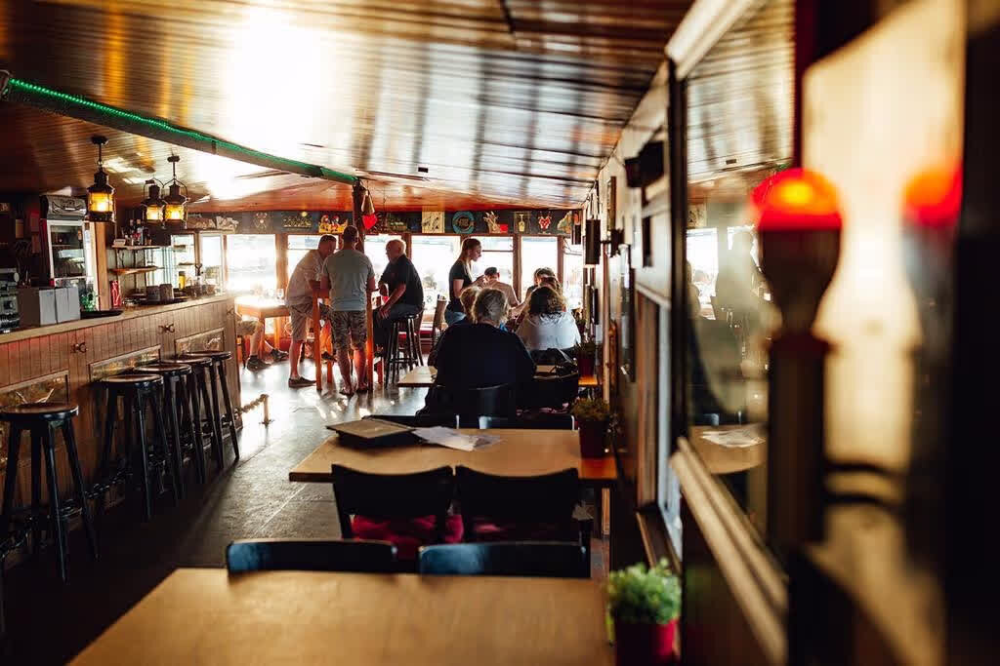
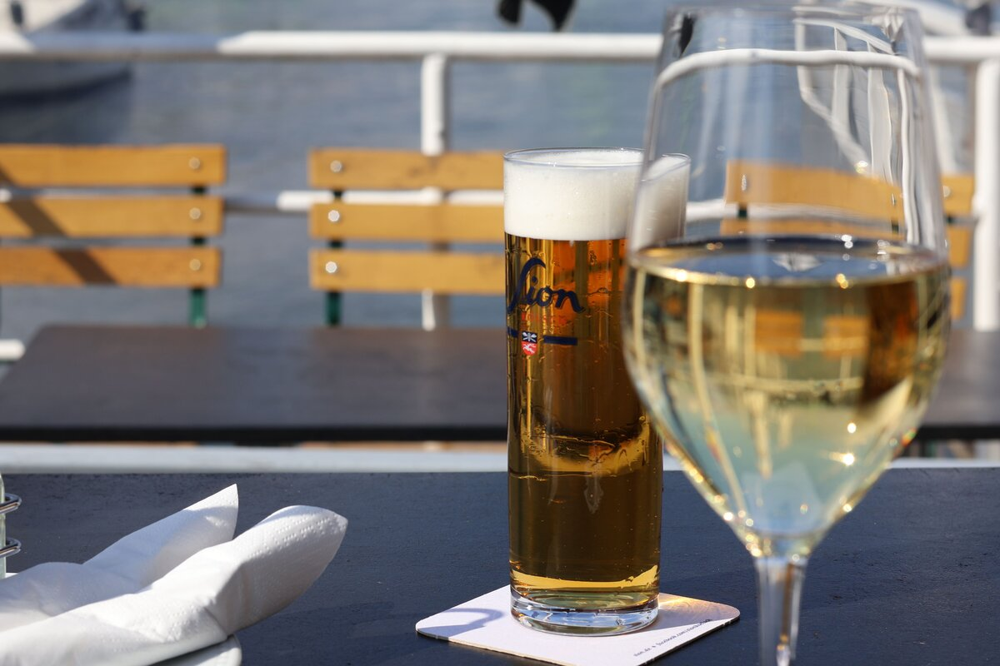

Privat
Feste & Familie
Vom runden Geburtstag bis zur Taufe: Wir richten Ihre Feier aus, mit Menü oder Buffet, ganz nach Anlass und Runde.
Ein Schiffsrestaurant am Rodenkirchener Leinpfad, seit über vierzehn Jahren fester Teil des Kölner Rheinbogens. Drinnen warmes Holz und Fensterfront zum Wasser, draußen die Terrasse direkt am Strom. Deutsch-italienische Küche, für die man uns das Schnitzelschiff nennt.
Ursprünglich ein Hausboot, wurde die MS Rodenkirchen mit viel Liebe und Leidenschaft von Helmut Ammel zu einem einzigartigen Schiffsrestaurant umgestaltet. Mit ihrer rustikalen Einrichtung, dem sanften Schaukeln auf dem Wasser und dem Blick auf die Rodenkirchener Riviera versprüht sie bis heute maritimen Charme.
Von der Terrasse blicken Sie auf das Panorama von Rodenkirchen mit der aus dem 8. Jahrhundert stammenden Maternus-Kapelle, der Autobahnbrücke und der urigen Rheinpromenade. Ein separater Saal ist bestens für Feierlichkeiten aller Art geeignet, und Platz gibt es für bis zu 300 Gäste.

Deutsch-italienische Küche, für die man uns das Schnitzelschiff nennt. Die Portionen sind großzügig, die Preise fair. Am Nachmittag frische Waffeln, Kaffee und Kuchen.

An der zum Ufer ausgerichteten Terrasse sitzen Sie so nah am Wasser, dass die Wellen der Frachter bis zu Ihnen tragen. Vor Ihnen das Panorama von Rodenkirchen, die Maternus-Kapelle und die Rheinpromenade.
Bei schönem Wetter der beste Platz im Kölner Süden. Reservieren Sie rechtzeitig, die Terrasse ist beliebt.
Ein separater Saal, geeignet für Feierlichkeiten aller Art. Bis zu 300 Gäste finden bei uns Platz, drinnen wie draußen. Fragen Sie nach den speziellen Arrangements, wir beraten Sie gern.
Vom runden Geburtstag bis zur Taufe: Wir richten Ihre Feier aus, mit Menü oder Buffet, ganz nach Anlass und Runde.
Ein Ort, der im Gedächtnis bleibt: Betriebsfeier, Sommerfest oder Kundenabend mit Rheinblick statt Konferenzraum.
Der separate Saal ist bestens für größere Gesellschaften geeignet. E-Mail-Anfragen nehmen wir ab 30 Personen entgegen.
„Aufgrund der Lage und des Schiffscharakters immer wieder ein Highlight und Erlebnis. Die Waffeln sind absolut empfehlenswert. Faires Preis-Leistungsverhältnis, zu beliebten Zeiten besser reservieren. Wunderschöner Blick auf den Rhein."
„Die Atmosphäre auf dem Bootshaus ist einfach nur einzigartig. Wo sitzt man so schön am Rhein in Köln? Nirgendwo. Das Essen ist rustikal sehr gut und super schmackhaft, besonders empfehlenswert das Schnitzel. Auch die Waffeln und der Kuchen: lecker."
„Wir waren das erste Mal hier. Das gebotene Ambiente war toll, alle paar Minuten kommt ein Boot oder Schiff vorbei und es gibt immer etwas zu gucken. Wir sind freundlich empfangen worden, innen wie außen sauber und ordentlich. Ich kann definitiv sagen: wir kommen wieder."






Rodenkirchener Leinpfad, 50996 Köln. Zugang über die Rheinstraße, direkt am Wasser.
In der Wintersaison sind Montag und Dienstag Ruhetag. Rufen Sie im Zweifel kurz an: 0221 395184.
Tiefgarage Sommershof, Barbarastraße 17 bis 19. Oder Parkhaus Rewe Rodenkirchen, Gudrunstraße 6, etwa 10 Minuten Fußweg.
Die Karte wird erst auf Klick von Google geladen, damit ohne Ihre Einwilligung keine Daten an Google gehen.
Ein Anruf genügt, und wir halten Ihnen einen Tisch bereit. Oder senden Sie uns eine Anfrage. E-Mail-Reservierungen für Gesellschaften nehmen wir ab 30 Personen entgegen.